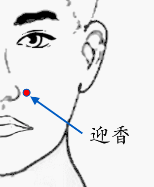

【穴位名稱】: 迎香 (LI20)

【治療症狀】: 蛔蟲癥 清鼻涕 周圍性顏面神麻痺 三叉神經痛 青春痘 手指化膿 腳趾化膿 面神經麻痺 鼻出血 扁桃腺炎
【取穴位置】: 面部，鼻翼外緣中點旁鼻唇溝中凹陷處。《針灸甲乙經》：「在禾?上，鼻下孔傍」；《銅人腧穴針灸圖經》：「鼻孔傍五分」；《千金要方》：「禾?上一寸」；《針方六集》：「當約口紋」。
【針刺方法】: 直刺0.2～0.3吋；沿鼻根向內上方橫刺0.3～0.5吋；或沿皮向四白方向橫透。禁直接灸。
回前頁